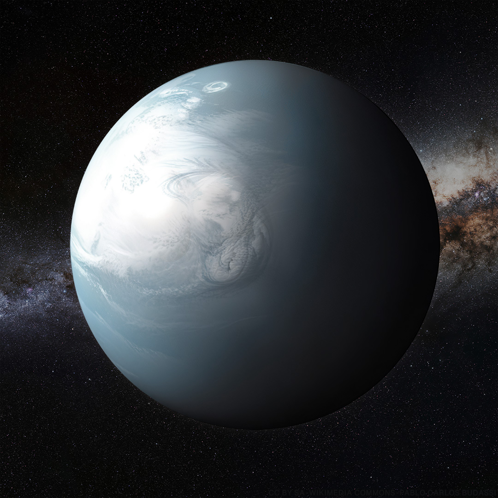

a large ocean world with a hydrogen atmosphere
Overview
Ocean worlds are exoplanets thought to be covered by a deep, global layer of liquid water, far deeper than any ocean on Earth. One group, called hycean worlds, a name mixing "hydrogen" and "ocean" first suggested in 2021, describes planets with a global ocean sitting under a thick, hydrogen-rich atmosphere. Nothing quite like this exists in the Solar System.
Why they might exist
Many known exoplanets fall in the size range between rocky super-Earths and gas-rich mini-Neptunes. Models suggest some of these could be water-rich worlds, with a deep layer of water sitting over ice and rock, and a hydrogen or steam atmosphere on top, depending on temperature. Water is common in protoplanetary disks, especially past the frost line, so a planet that drifted inward from an icier region could easily have picked up enough water to form an ocean like this.
Possible conditions
Depending on temperature and air pressure, an ocean world's surface could range from a mild liquid ocean to a scorching layer of water and steam with no clear line between liquid and gas at all. The hycean idea specifically suggests conditions mild enough at the surface of the ocean to possibly support life, even with crushing pressure and a hydrogen atmosphere pressing down from above.
Notable examples
K2-18 b, a planet about the size of a mini-Neptune sitting in its star's habitable zone, has been suggested as a possible hycean world. The James Webb Space Telescope has picked up water vapour and carbon-based molecules in its atmosphere. TOI-1452 b, which orbits a red dwarf star, has also been suggested as a possible ocean world based on its size and estimated density.
Uncertainty
No ocean world has been confirmed yet, since current telescopes can't see through a planet's atmosphere down to its surface or interior. A planet's overall density can often match several different possible interiors, so claims about ocean worlds rely on combining density estimates with what's found in the atmosphere and climate models, rather than actually seeing liquid water.
Detection & Study
Ocean world candidates are first spotted by their size and mass, measured through transits and radial velocity. They're then studied further with transmission spectroscopy, which looks at starlight that has passed through a planet's atmosphere during a transit to work out what gases are there. This technique, mostly powered by the James Webb Space Telescope, drives most of the current research into hycean worlds.